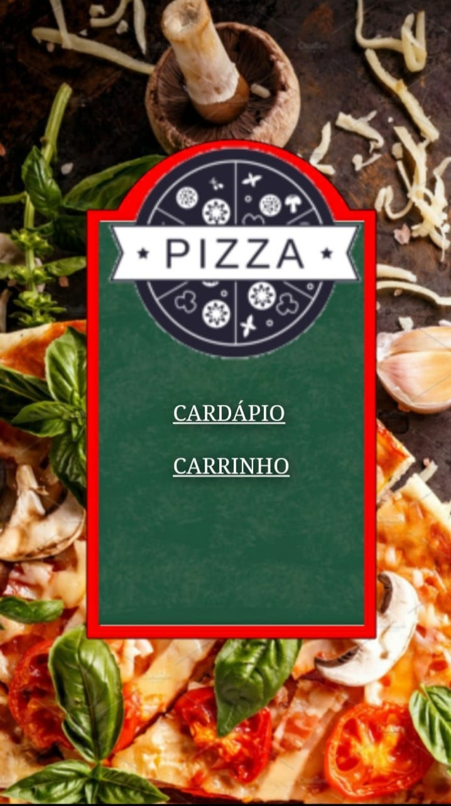
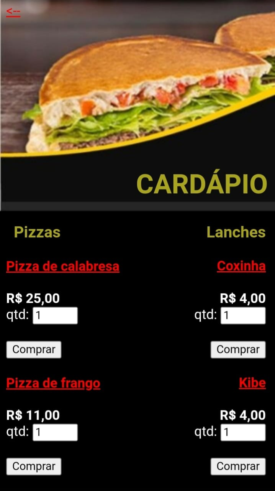
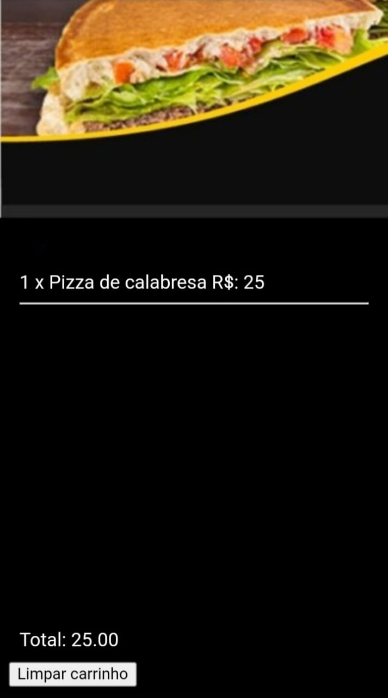

Cardapio digital para pizzarias ou restaurantes tematicos, fornecendo uma lista de todos os pratos, salgados e bebidas do estabelicimento.
Além claro de seu carrinho de pedidos.
No campo do carpia é possivel ver as descrições dos alimentos como ingrediente e tempo de preparo para em caso do cliente quiser saber se tera ou não algo
que o mesmo é alergico, e também saber o tempo em média que devera esparar o seu pedido. Além claro da seleção de quantia de cada prato serão pedidos
Agora no carrinho o cliente podera verificar os seus pedidos, com a quantia pedida e os valores de cada pedido, junto do valor total a ser pago.
